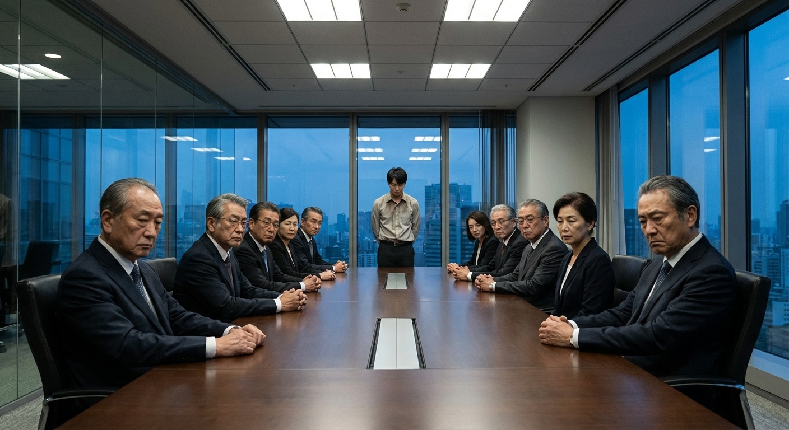
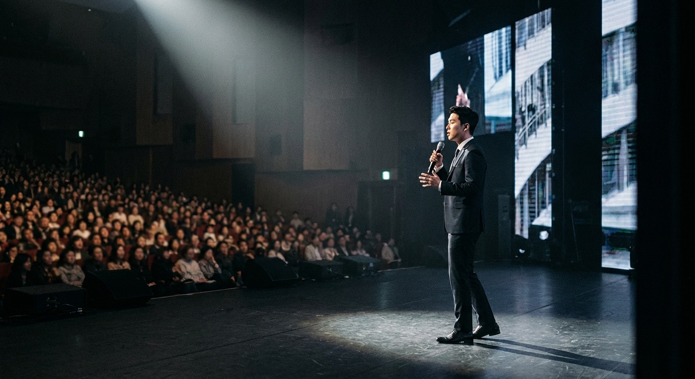

暴雨如注。
陈默站在华鼎集团的玻璃大楼前，雨水顺着他廉价西装的袖口往下滴，积成一小摊水洼。
三年前他入赘林家，接手了华鼎的一个烂摊子项目组。三年来没日没夜，把一个亏损三千万的部门做到了盈利。
今天是年度股东大会。他以为自己终于能抬头做人了。
—— 第 一 章 ——
跪着的人

会议室里，坐满了林家的人。岳父林建国坐在主位，眼镜后面的目光冷如冰。大舅子林浩翘着二郎腿，满脸不屑。
林建国
"陈默，项目部今年的确扭亏为盈了。但公司经过慎重考虑——这个部门将并入浩哥的战略发展部。你……另有安排。"
另有安排。
陈默听懂了。他辛苦三年养大的孩子，要被别人抱走。而他这个"赘婿"，永远不配坐上那张椅子。
陈默听懂了。他辛苦三年养大的孩子，要被别人抱走。而他这个"赘婿"，永远不配坐上那张椅子。
林浩
"妹夫别不高兴啊。你就是个打工的，这位置本来也不是你的。知足吧。"
· · ·
散会后，陈默一个人回到了出租屋——对，出租屋。入赘三年，他连林家大院的门都住不进去，只能在公司附近租了个30平的单间。
深夜，他打开电脑。屏幕的光照亮了满桌的商业书籍和手写笔记。
这三年，他不只是在给林家打工。每一个失眠的夜晚，他都在学——学财务模型、学融资架构、学供应链管理。那些林家二代花钱也学不会的东西，他靠熬夜硬啃下来了。
他打开一个加密文件夹，里面是一份完整的商业计划书。
封面写着三个字：「破局者」。
这三年，他不只是在给林家打工。每一个失眠的夜晚，他都在学——学财务模型、学融资架构、学供应链管理。那些林家二代花钱也学不会的东西，他靠熬夜硬啃下来了。
他打开一个加密文件夹，里面是一份完整的商业计划书。
封面写着三个字：「破局者」。
· · ·
—— 反 击 ——
我不是来求你的
一周后。陈默约了一个人在城东最贵的私房菜馆见面。
来的人叫周明远——鼎辉资本合伙人，管着50亿的基金。
来的人叫周明远——鼎辉资本合伙人，管着50亿的基金。
周明远
"小陈，你这商业计划书我看了。坦白说——你在华鼎做的那套供应链数字化方案，我们关注很久了。只是没想到，核心设计者是个……"
陈默
"赘婿？"
周明远笑了。他拿起平板，上面是一组数据——陈默主导的项目在三年内创造了2.3亿的增量利润，成本压缩率行业第一。
周明远
"我不投赘婿，也不投富二代。我只投能打的人。Pre-A轮，鼎辉领投——3000万，估值1.5亿。你什么时候能出来？"
· · ·
然而事情没那么顺利。
陈默提交辞呈的当晚，林浩带人闯进了他的出租屋。
陈默提交辞呈的当晚，林浩带人闯进了他的出租屋。
林浩
"陈默，我查过了。你在外面搞什么'破局者'项目？用的是不是华鼎的核心数据？我可以告你商业间谍。"
陈默看着他，很平静。
陈默
"林浩，那套供应链系统是我从零写的，所有代码和方案都在我个人电脑上完成，没用华鼎一行代码、一条数据。你可以查，我不怕。"
他停了一下，补了一句：
陈默
"倒是你——上个月从公司账上转走的那笔钱，你确定要在这个时候跟我翻脸？"
林浩的脸瞬间白了。
· · ·

—— 高 光 ——
舞台是留给准备好的人的
三个月后。「破局者」产品发布会。
500人的会场座无虚席。台下坐着投资人、行业大佬、媒体记者——还有几个"不请自来"的林家人。
陈默站在聚光灯下，穿着得体的深蓝西装。不贵，但干净利落。
他没有讲情怀、没有卖惨、没有提林家一个字。他只是用数据说话——客户转化率、成本节约比例、行业对比分析。每一页PPT都是三年深夜苦读的结晶。
发布会结束时，全场起立鼓掌。
500人的会场座无虚席。台下坐着投资人、行业大佬、媒体记者——还有几个"不请自来"的林家人。
陈默站在聚光灯下，穿着得体的深蓝西装。不贵，但干净利落。
他没有讲情怀、没有卖惨、没有提林家一个字。他只是用数据说话——客户转化率、成本节约比例、行业对比分析。每一页PPT都是三年深夜苦读的结晶。
发布会结束时，全场起立鼓掌。
发布会后的一周内：
三家头部企业签了意向合同。
两家基金追加了投资意向。
公司估值从1.5亿直接跳到了5亿。
林建国打来了电话，说要"谈谈"。陈默没接。
他只给妻子林晚晚发了一条消息："你嫁的人，不只是个赘婿。"
三家头部企业签了意向合同。
两家基金追加了投资意向。
公司估值从1.5亿直接跳到了5亿。
林建国打来了电话，说要"谈谈"。陈默没接。
他只给妻子林晚晚发了一条消息："你嫁的人，不只是个赘婿。"
· · ·
深夜。公司楼顶天台。
陈默站在那里，看着脚下灯火通明的城市。三年前，他在这座城市连个落脚的地方都没有。现在，这座城市的商业版图上，有了他的一个小小的点。
手机震动。周明远的消息：
陈默站在那里，看着脚下灯火通明的城市。三年前，他在这座城市连个落脚的地方都没有。现在，这座城市的商业版图上，有了他的一个小小的点。
手机震动。周明远的消息：
周明远
"恭喜。不过别高兴太早——林家已经在联系红杉和GGV了。他们不是要投资你，是要围剿你。A轮之前，你需要更多弹药。"
陈默握紧手机，嘴角扬起一个弧度。
"来吧。"
他在雨里站过、在冷眼中活过、在深夜里熬过。
他已经不是那个跪着的人了。
"来吧。"
他在雨里站过、在冷眼中活过、在深夜里熬过。
他已经不是那个跪着的人了。